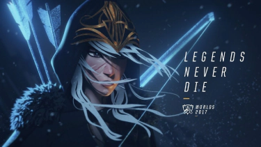
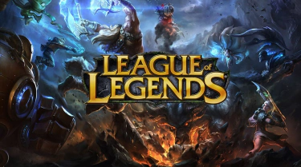

A great deal of music has been created to pay tribute to great men and women who have sadly passed away in the line of duty or simply because of age.
One example is the music "See you Again" by Wiz Khalifa & Charlie Puth.
The music was originally intended to be the soundtrack for Fast and Furious 7, but it turned out to be a tribute to Paul Walker who died in a car accident during the filming of the 7th installment of the saga.
Let us return to our subject,
What is LND?

What is LND?
It is first and foremost an abbreviation of the original song which is called "Legends Never Die" in French.
This was written by the Riot Games Music, Alex Seaver of Mako, Oliver. She is also in collaboration with the artist known as Against The Current.
This song was originally used as the official song for the 2017 season of the game League of Legends.
But for us, it means much more. It is a way of remembering moments spent with people, or simply a tribute to people who have fought for great things. This music shows us much more, thanks in particular to the strong and moving lyrics:
"Legends never die".
Legends who are strong people to us: friends / sister / brother / family / or more.
The music is available for listening at this link:
Coming back to the use of the song, it is mostly used around the « League of Legends » but what is it?

League of Legends
LOL, the abbreviation of the name of the video game, is primarily a strategy game released in 2009. It is a free-to-play online battle arena game developed by Riot Games. The main mode of the game is to see two teams of 5 players compete in real time. The goal is to destroy the enemy's base. Battles can last from 30 minutes to 1 hour in long overtime.
For more information, the game is available for installation at this link: